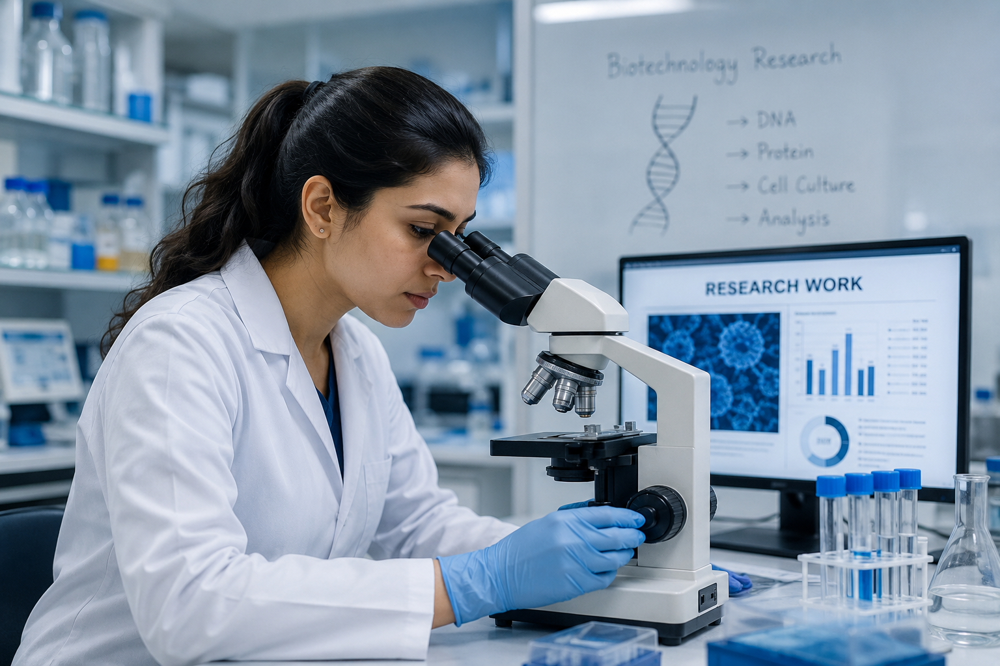
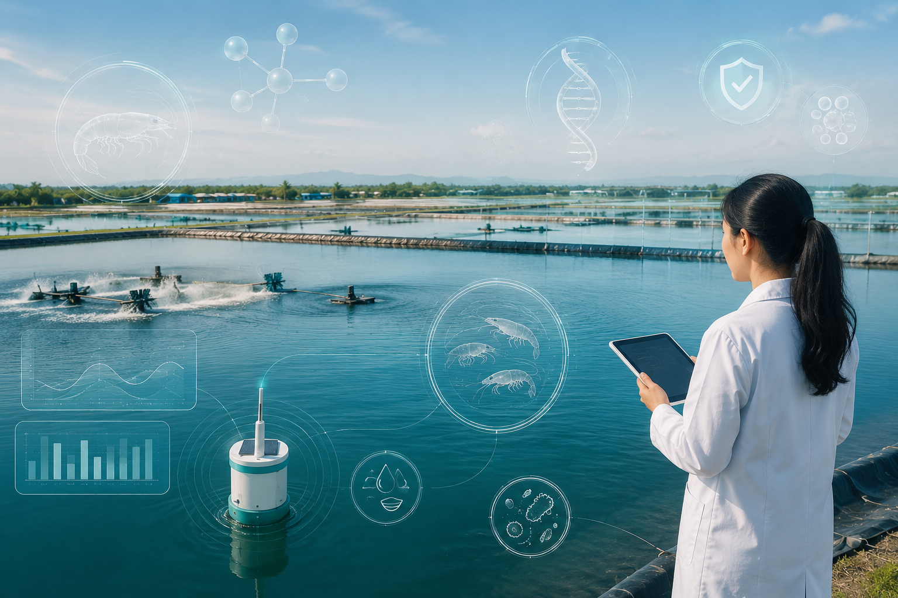
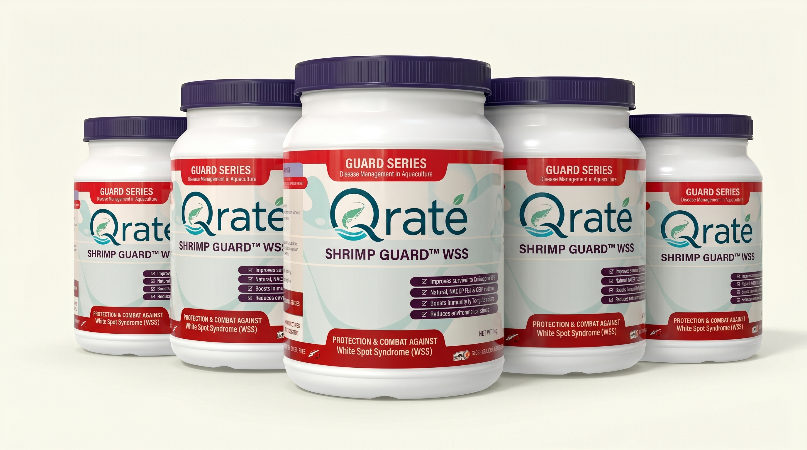

A scientifically engineered aquaculture solution designed to improve shrimp health, reduce disease risk, and support sustainable pond productivity.

Disease outbreaks pose a significant threat to pond stability and overall yield. Without proactive management, farmers face severe productivity loss and ecosystem degradation.
Qrate provides a preventive-focused, science-based approach to protect your aquaculture investments. By combining marine science with biotechnology, we help maintain healthy shrimp and balanced aquatic ecosystems.

An advanced formulation dedicated to WSS prevention support, enhancing shrimp health, and ensuring pond ecosystem stability. Designed for sustainable aquaculture performance.

A foundation of trust, science, and industry expertise.
Rigorous research and pharmaceutical-grade formulation for maximum efficacy.
Deep understanding of marine ecosystems and aquaculture challenges.
Protecting yields without compromising the long-term health of the environment.
Ongoing consultation and expert guidance for optimal farm integration.
Connect with our team to learn how Qrate supports healthier and more sustainable aquaculture operations.